Linux 프로세스·로그·디스크 상태와 API·DB·외부 연동의 예외 경로를 함께 확인해 장애 원인과 변경 범위를 좁힙니다.
코드보다 먼저 운영의 맥락을 읽습니다.
Java 백엔드 개발과 Linux/Tomcat 서비스 운영을 함께 경험했습니다. 기존 구조의 선택 이유와 데이터의 이동을 이해하고, 서버 상태와 애플리케이션 로그를 연결해 사용자가 실제로 멈추는 지점을 찾습니다.
정적 HTML과 스프레드시트 데이터를 검증 가능한 DB 운영 모델로 옮깁니다.
고객과 운영자의 실제 동선을 확인하고 화면 밖의 업무까지 설계에 반영합니다.
CSAP 대응의 서버 설정 점검과 ELK/APM 구축 경험을 바탕으로 권한, 로그, 실패 처리까지 설계에 반영합니다.
운영 중인 메일 서비스의 문제를 추적하고 개선했습니다.
공공기관·연구기관의 Linux/Tomcat 기반 Java 메일 서비스를 개발·운영했습니다. 고객사 요구사항 개발, 레거시·검색 기능 개선, 외부 API 연동과 함께 배포, 장애 원인 분석, 서버 설정 점검, ELK와 APM 기반 관측 환경 구축을 담당했습니다.
SMTP·POP3·IMAP과 메일 송수신 구조를 바탕으로 서버, 애플리케이션, DB, 외부 연동 상태를 함께 확인했습니다. 고객사 13개 CS 채널의 운영 이슈를 접수·분석·대응하며, 코드 수정이 필요한 문제와 서버 설정을 보완해야 하는 문제를 구분했습니다.
SMS/MMS 외부 API와 대량 발송 구조 개선
상황
shell curl 기반 발송 로직은 MMS 확장과 예외 처리가 어려웠습니다.
설계
RestTemplate 기반 공통 발송 계층과 타입별 처리를 분리하고 수신자를 청크로 나눴습니다.
결과
한국농수산식품유통공사 운영에 SMS, MMS, 엑셀 대량 발송을 적용했습니다.
KISTI 프라이빗 클라우드 ELK/APM 모니터링 구축
상황
VM에 직접 접속해야 로그를 볼 수 있어 장애 원인 파악과 CS 대응이 느렸습니다.
설계
Docker 기반 ELK와 Fleet·Elastic Agent로 서버·애플리케이션 로그를 중앙 수집하고, Kibana의 Admin/Readonly 권한을 분리했습니다.
결과
중앙 로그 조회로 장애·CS 대응 시간을 줄였습니다. Elastic APM의 요청 추적과 Slow Query 분석으로 불필요한 메일 조회 조건을 찾아 SQL을 개선했습니다.
Linux/Tomcat 메일 서비스 배포와 장애 대응
운영 환경
KT Cloud와 Naver Cloud Platform(NCP) 기반 공공 클라우드 환경에서 Linux/Tomcat 메일 서비스를 개발·유지보수했습니다.
배포와 상태 확인
Jenkins 기반 배포, Tomcat 서비스 재기동과 로그 확인을 수행하고 Linux CLI로 프로세스·디스크 등 서버 상태를 점검했습니다.
원인 분석
메일 송수신 구조를 이해하고 Linux·Tomcat 로그, DB와 외부 API 상태를 함께 살펴 장애 발생 영역을 추적했습니다.
CSAP 대응을 위한 Linux 서버 설정 점검·보완
접근과 통신
SSH와 서버 접근 설정, 서비스 포트 및 방화벽 정책을 점검하고 필요한 설정을 보완했습니다.
계정과 파일 권한
계정 패스워드 정책과 파일·디렉터리 접근 권한을 확인하고 점검 결과에 따라 보완했습니다.
로그와 운영 상태
시스템·서비스 로그 설정과 상태를 확인하며 실제 운영 서버의 설정과 보안 상태를 점검했습니다.
레거시 검색 결과 내 재검색 기능 구현
상황
1회성 검색만 가능해 누적 메일이 많은 환경에서 같은 작업을 반복했습니다.
설계
검색 엔진을 바꾸지 않고 이전 결과와 새 결과의 mailUid 교집합을 적용했습니다.
결과
기존 구조를 유지하면서 최대 5회까지 단계적으로 결과를 좁힐 수 있게 했습니다.
공통 히스토리와 네비게이션 상태 정상화
상황
뒤로가기 시 직전 화면이 복원되지 않고 메일함 강조 상태도 어긋났습니다.
설계
상세, 목록, 메일함 이동마다 유지할 화면 상태와 복원 기준을 다시 정의했습니다.
결과
사용자 기대와 브라우저 히스토리를 맞추고 관련 문의를 0건으로 줄였습니다.
Spring AI 기반 공공 메일 AI 기능 PoC
상황
단일 문자열 프롬프트와 RestTemplate 호출로는 품질과 확장성이 제한됐습니다.
설계
Spring AI ChatClient로 역할을 분리하고 번역과 외국어 메일 작성 기능을 구현했습니다.
결과
NIA 베타 운영에 도입했고 이후 RAG와 에이전트 확장 경계를 확보했습니다.
글램독의 고객 경험과 운영 기반을 함께 설계합니다.
고객 문의, 예약 운영, 현장 안내라는 서로 다른 문제를 세 개의 독립된 제품으로 해결하고 있습니다. Map은 양양점 현장에서 운영 중이며, 고객 안내 Bot은 베타 준비, CRM/PMS는 레거시 전환 개발 단계입니다.
01
Accommodation Bot
고객 접점
지점별 정책과 운영 정보를 근거로 고객 문의에 답하고, 필요한 경우 현장 상담으로 연결합니다.
양양점 베타 준비 02 Glamdog CRM/PMS 운영 코어예약과 객실을 중심으로 체크인, 청소, 정산, 스케줄과 지점별 협업 데이터를 연결합니다.
레거시 전환 개발 중 03 Glamdog Map 현장 안내시설 위치와 이용 안내를 현장 디스플레이에 통합해 투숙객의 다음 행동을 안내합니다.
양양점 현장 운영 중Accommodation Bot · Request flow
고객의 질문이 지점에 맞는 검증된 안내가 되기까지
01 · Customer context
예약 전 고객 / 투숙객
문의와 함께 URL의 지점 문맥을 확정하고 입력·요청 경계를 검사합니다.
02 · Skill and policy
지점별 정보와 정책 조회
공개된 운영 정보와 날짜·객실별 정책 우선순위를 근거로 답변을 구성합니다.
03 · Safe response
검증된 답변 / 현장 연결
SSE로 응답하고 근거가 부족하면 제한 안내 또는 상담원 연결로 전환합니다.
양양점 베타 준비
Accommodation Bot
Next.js 16 / AI SDK / Gemini / Supabase
단순 FAQ가 아니라 지점, 객실, 규정, 시설, 운영 상태를 분리한 멀티테넌트 고객 안내입니다. 고객이 다른 지점을 언급해도 서버가 URL의 지점 문맥을 유지합니다.
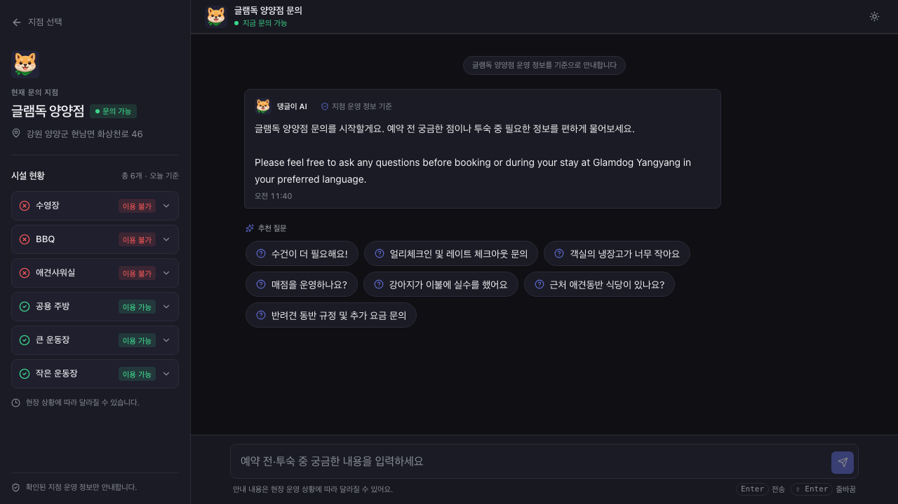
Accommodation Bot 추가 화면과 기술 구조
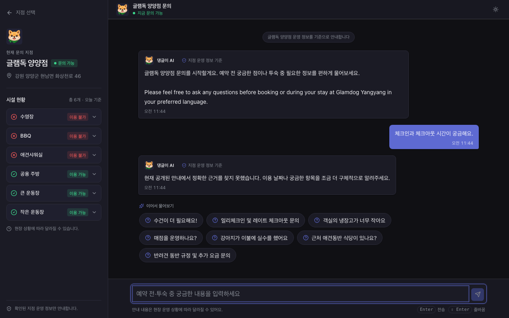
요청 경계
propertySlug 확정
입력 검증, rate limit, 보안 경계 검사
Agent 실행
Skill + Tool + Policy
게시 버전 선택, 병렬 조회, 날짜별 우선순위 해석
응답과 운영
SSE + masked logs
근거 기반 답변, 제한 응답, 상담원 연결
정책 우선순위
특정 날짜, 시즌, 객실, 지점, 조직 기본값 순으로 현재 답을 결정합니다.
운영자 소유권
공통 Skill과 지점 Override를 초안, 게시, 복원할 수 있습니다.
안전한 실패
모델이나 근거가 없으면 임의 추론 대신 제한된 안내 또는 handoff를 반환합니다.
데이터 격리
공개 데이터와 내부 Skill, 운영 로그의 접근 키와 RLS 경계를 분리했습니다.
레거시 전환 개발 중
Glamdog CRM/PMS
Next.js 16 / PostgreSQL / Drizzle / Supabase
정적 HTML과 Google Apps Script, Sheets로 분산된 6개 지점 운영을 검증 가능한 예약 데이터와 지점 단위 업무 시스템으로 전환합니다.
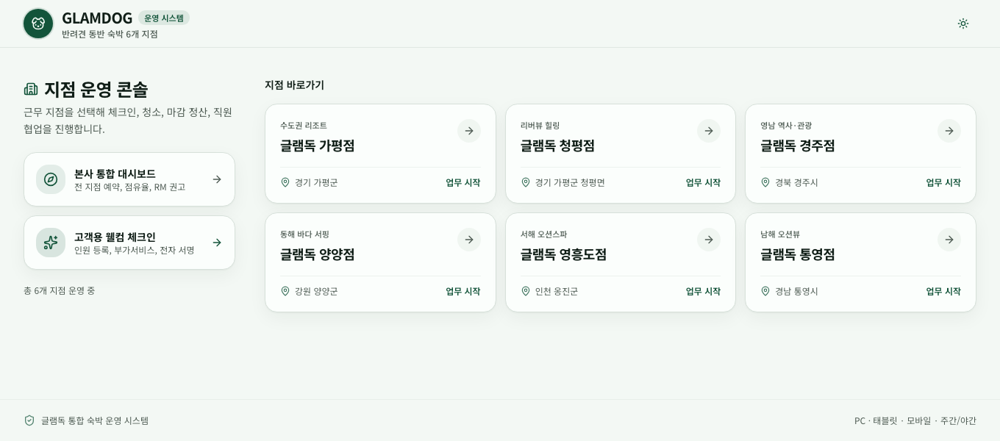
Glamdog CRM/PMS 추가 화면과 기술 구조
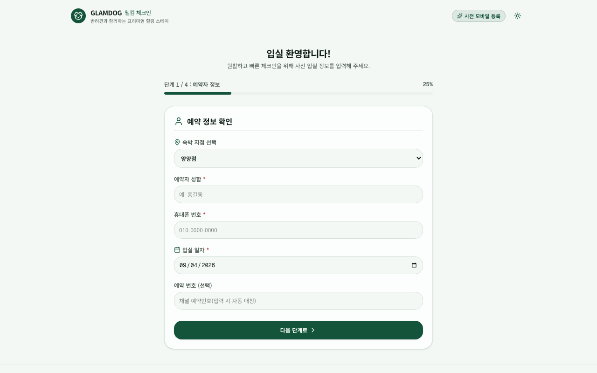
입력
Legacy ETL / Crawler API
일괄 이관과 실시간 수집이 같은 입력 계약을 사용
정규화
검증 + transaction
금액 파싱, 지점 매핑, 자연키 중복 확인
운영
Branch / HQ views
체크인, 청소, 정산, 스케줄, 협업, 본사 대시보드
멱등 수집
booking_no와 raw_room_code를 충돌 키로 사용해 반복 실행에도 행 수가 흔들리지 않습니다.
실패를 기록
수집 성공과 실패, 건수, 매핑 실패를 crawl_runs에 남겨 데이터 정지를 추적합니다.
지점 스코프
모든 운영 쿼리는 withBranchScope 또는 본사 권한 가드를 통과합니다.
교체 가능한 외부 경계
Session, Storage, Realtime을 Port와 Adapter로 나눠 Supabase 전환 범위를 제한했습니다.
양양점 현장 운영 중
Glamdog Map
HTML / CSS / JavaScript / Python Imaging
현장 곳곳의 종이 안내문을 줄이고 장소, 시간, 행동 안내를 1360x768 디스플레이 경험으로 통합했습니다. 실제 공간을 기준으로 지도 이미지를 보정하고 운영 상태를 빠르게 전환할 수 있게 만들었습니다.
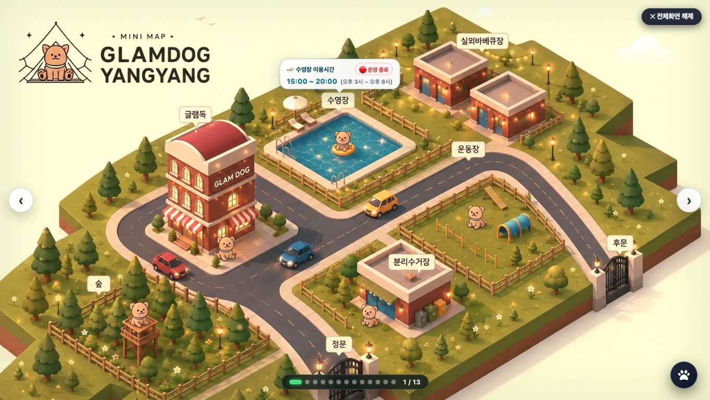
Glamdog Map 추가 화면과 기술 구조
1 / 11 · 리뷰 이벤트 안내
현장 분석
공간과 안내 수집
건물, 운동장, 수영장, 고객 동선 기준으로 정보 재구성
그래픽 제작
Pillow image pipeline
크롭, 좌표 측정, 라벨과 시설 요소 보정
디스플레이
Fullscreen slider
시간대 모드, 청소중, 식사중, 시설 안내를 현장에서 전환
공간 기반 정보 구조
안내문 주제가 아니라 고객이 서 있는 위치와 다음 행동을 중심으로 묶었습니다.
운영 장치
전체화면, 슬라이드, 시간대 분위기, 상태 오버레이를 한 HTML에서 제어합니다.
화면 안정성
고정 해상도와 비율을 기준으로 좌표를 관리하고 reduced motion을 지원합니다.
현장 적용
양양점 디스플레이에 도입해 흩어진 안내 정보를 한 화면으로 통일했습니다.
운영 가능한 AI와 콘텐츠 제품도 만들었습니다.
기술 데모에 머물지 않고 상태, 관측, 배포, 사람의 개입 지점까지 설계한 프로젝트입니다.
AI Assistant
Spring AI와 Ollama 기반 대화 서비스. 문서 RAG, SSE 스트리밍, 대화 저장과 실행 추적을 Vue 화면까지 연결했습니다.
AI Assistant 상세 보기AI Assistant 상세 접기
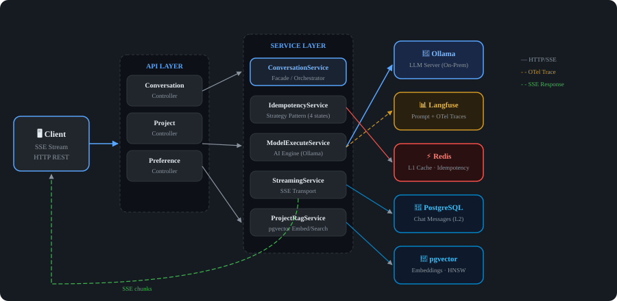
핵심 설계
- 실시간 응답과 재시도
- SSE로 토큰을 전달하고 멱등성 키로 재시도 요청의 중복 처리를 제어했습니다.
- 필요할 때만 문서 검색
- Tool-based RAG를 프로젝트 대화에만 활성화해 모델이 검색 도구를 선택하도록 구성했습니다.
- 빠른 조회와 영속 저장
- Redis와 PostgreSQL을 함께 사용하고, 대화 이력과 첨부파일의 연결을 보존했습니다.
- 실행 과정의 관측
- Langfuse로 프롬프트, 응답, 토큰 사용량과 지연 시간을 추적했습니다.
- 배포와 분리한 프롬프트 관리
- Langfuse에서 프롬프트와 모델 파라미터를 관리하고 실행 시점에 불러오도록 설계했습니다.
- 대화부터 사용량 확인까지
- Vue 3 화면에서 스트리밍 대화, 프로젝트별 이력, 문서 검색 결과와 사용량 대시보드를 제공했습니다.
설계 결정 01 · 항상 검색하는 파이프라인 대신 Tool-based RAG
모든 요청에 검색을 선행시키지 않고, 프로젝트 대화(PromptType.PROJECT)에서만 @Tool 검색 도구를 제공했습니다. 모델이 질문에 따라 도구를 호출하고 검색 결과를 답변에 활용하는 구조입니다.
AgentToolProvider는 요청 범위에서 사용자와 프로젝트 식별자를 생성자로 전달받습니다. 가상 스레드 환경에서 ThreadLocal에 의존하지 않고 검색 범위를 명시적으로 전달하도록 경계를 잡았습니다.
설계 결정 02 · 스트리밍 재시도를 상태별로 분리
클라이언트는 재시도 시 동일한 X-Idempotency-Key를 사용합니다. StreamingIdempotencyCoordinator가 상태를 확인하고, IdempotencyStateHandler 전략에 처리를 위임합니다.
NoStateHandler, InProgressStateHandler, CompletedStateHandler, FailedStateHandler로 최초 요청·실행 중·완료·실패를 구분해 중복 실행과 저장을 제어했습니다.
트러블슈팅 · 대화 저장 시 첨부파일 연결이 끊기는 문제
기본 JDBC 메모리 저장 방식의 삭제 후 재삽입이 메시지와 첨부파일의 외래 키 관계에 영향을 주었습니다. CustomChatMemoryRepository로 저장 동작을 교체해 기존 메시지를 유지하고 새 메시지만 추가했습니다.
saveAll에서 메시지 타입과 내용으로 중복을 확인하고 UUID를 유지해 CHAT_MESSAGE와 CHAT_ATTACHMENT의 연결을 보존했습니다. 캐시뿐 아니라 영속 저장소의 데이터 관계까지 함께 고려한 수정입니다.
프론트엔드 · POST 스트리밍과 프로젝트별 대화 경험
Vue 3와 TypeScript로 구현했습니다. POST 요청에 본문과 멱등성 키를 담기 위해 EventSource 대신 Fetch와 ReadableStream으로 SSE를 수신하고, markdown-it으로 응답의 코드·표·목록을 렌더링했습니다.
대화·인증·대시보드 로직은 Composable로 나누고 프로젝트별 대화 이력을 구분했습니다. Langfuse 통계 API를 연결해 일별 사용량, 비용과 모델별 사용 비중을 확인할 수 있도록 구성했습니다.
구현 화면 · 대화, RAG, 실행 추적과 대시보드 (6장)
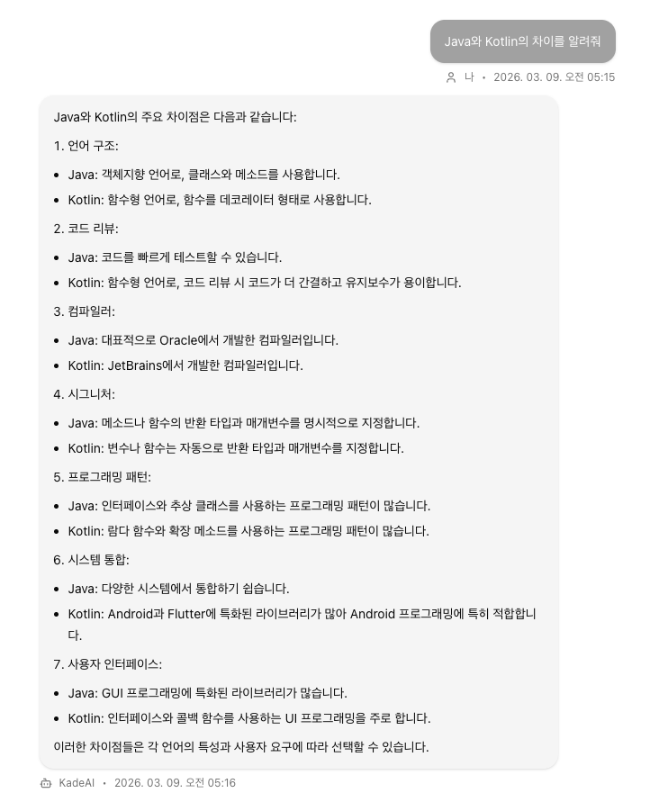
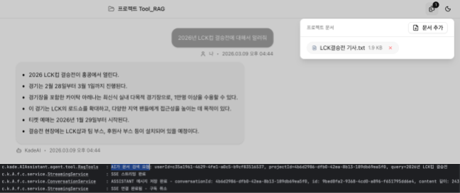
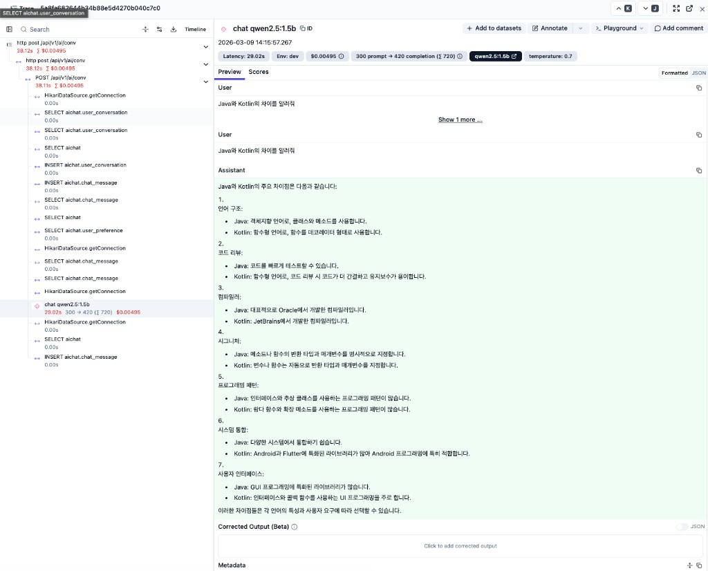
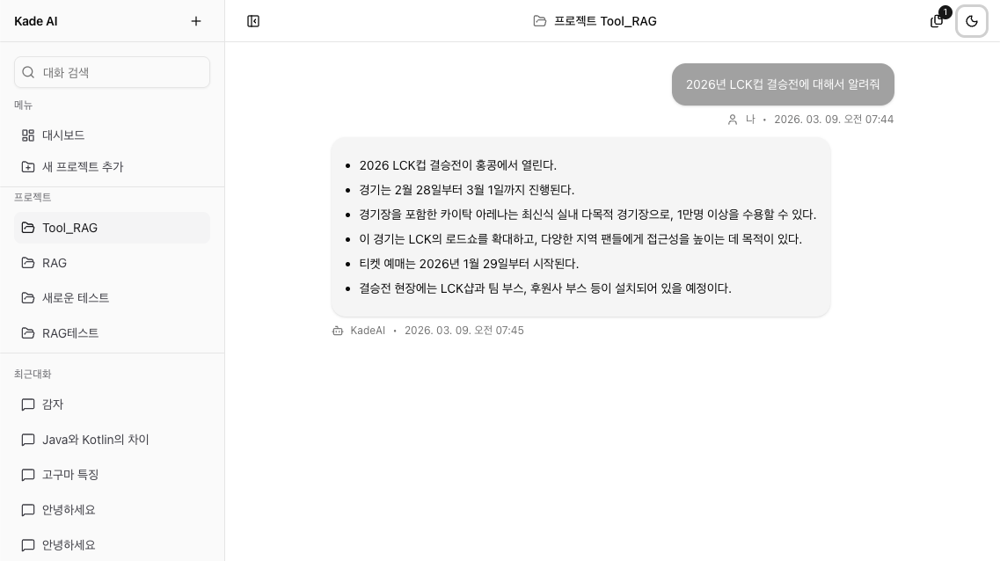
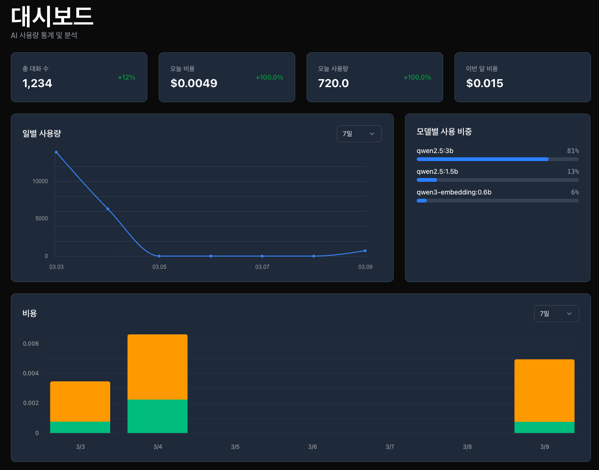
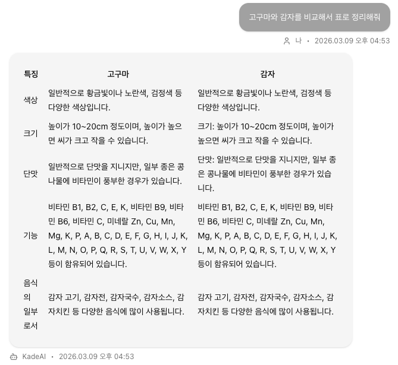
동작 시연
영상이 표시되지 않으면 YouTube에서 시연 보기 ↗
베리타
Gmail과 n8n으로 뉴스 후보를 모으고 운영자가 검수한 뒤 토스 미니앱으로 발행했던 뉴스 큐레이션 프로젝트입니다. 운영은 종료했습니다.
운영 종료
베리타 구조도 보기베리타 구조도 접기
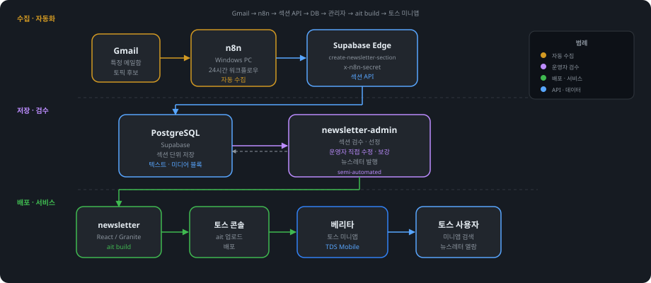
문제를 푸는 데 필요한 경계를 넓혀 왔습니다.
Backend
Java, Spring Framework, Spring Boot, Spring AI, JPA, Reactor, REST API, SSE
메일 서비스 기능 개선과 외부 API 연동부터 AI 스트리밍·중복 실행 제어까지 구현했습니다.
Data
PostgreSQL, MySQL, Supabase, Drizzle ORM, Redis, Elasticsearch, ETL, RLS
Linux · Deployment
Linux, Tomcat, Docker, Jenkins, KT Cloud, Naver Cloud Platform(NCP)
서비스 배포·재기동, 프로세스·로그·디스크 확인과 공공 클라우드 환경의 운영 이슈 대응 경험이 있습니다.
Product
Next.js, React, TypeScript, Tailwind CSS, Playwright, Vitest, Python Imaging
Monitoring · Troubleshooting
ELK Stack, Fleet, Elastic Agent, Elastic APM, Langfuse, OpenTelemetry
서버·애플리케이션 로그 중앙 수집, 조회 권한 분리, 요청 추적과 Slow Query 분석을 수행했습니다.
Mail · Server Security
SMTP, POP3, IMAP / SSH, 서비스 포트, 방화벽, 패스워드 정책, 파일 권한, 로그
메일 송수신 구조를 바탕으로 운영 이슈를 분석하고, CSAP 대응 과정에서 Linux 서버 설정을 점검·보완했습니다.
운영을 이해하는 개발자를 찾고 계신가요?
백엔드 개발과 Linux 서비스 운영 경험을 바탕으로 서버, 애플리케이션, 데이터의 문제를 함께 풀고 싶습니다.